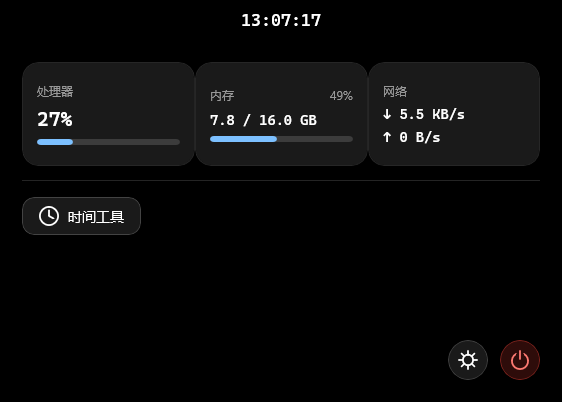
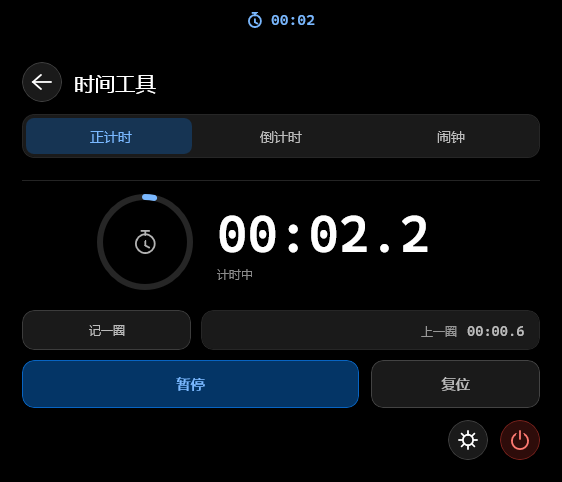
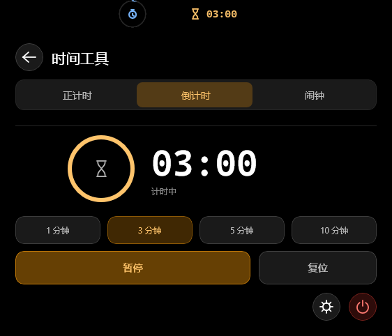
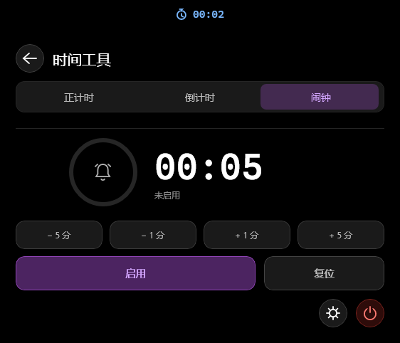
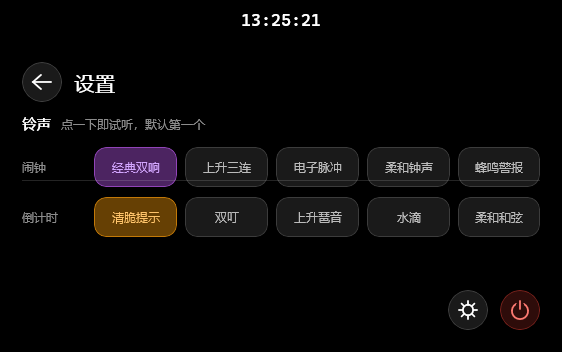
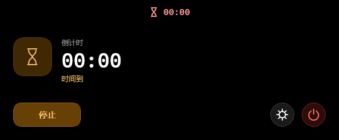
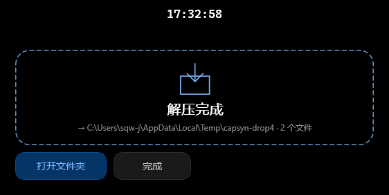
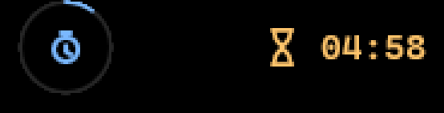

时间岛
320 × 40 的纯黑胶囊，HH:MM:SS 每秒跳动。鼠标移上去，下方用弹簧动画长出看板。
功能
不是又一个「小组件」：形状、动画、数据刷新都真的跑在系统上。
320 × 40 的纯黑胶囊，HH:MM:SS 每秒跳动。鼠标移上去，下方用弹簧动画长出看板。
正计时（记一圈 / 上一圈）、倒计时（1/3/5/10 分钟预设）、闹钟（±1/±5 分钟微调），环形进度一眼看剩多少。
收起后继续显示正在跑的计时；两个计时同时跑，旁边并出一枚 40×40 的独立小圆岛，点一下互换主次。
把 .zip 拖到岛上：虚线落点区弹出 → 系统原生选目录（默认就是压缩包所在目录）→ 进度 → 完成。拖出即消失，绝不误弹。
闹钟和倒计时各自 5 个代码合成的内置音效，也支持选自己的音频文件；选择会持久化，下次照旧。
时间到，岛自动展开成提醒面板并循环响铃；闹钟还能「稍后 5 分钟」，不会打断手上的事。
界面
下面每一张都来自程序运行时的窗口截图（按内容裁切）。









上手
自包含发布：.NET 运行时和 Windows App Runtime 都打在包里。
从 Release 下 .zip，解到任意目录（别只把 Capsyn.exe 拖出来）。
屏幕顶部中央出现时间岛；鼠标移上去就展开看板。首次启动约 6 秒（安全软件要扫一遍 DLL）。
设置里挑铃声，时间工具里开计时。退出按钮在右下角电源键 —— 那是唯一的退出入口。
下载
Windows 10 1809+ / Windows 11，x64。未签名，SmartScreen 提示「未知发布者」时选「更多信息 → 仍要运行」。
含最新「拖拽解压」：把 zip 拖到岛上就能解压。适合想尝鲜、能接受小毛病的人。
时间工具、顶部监测区、铃声与到点提醒都已就绪的版本，不含拖拽解压。
所有版本都发布在 GitHub Releases，
附带 .sha256 校验文件；源码在 SQW-Rool/Capsyn。
技术
窗口形状靠 Win32 区域逐帧计算，内容动画跑在 Composition 合成线程上。
没用分层窗口：每帧算出胶囊 ∪ 小圆 ∪ 看板的区域，直接 SetWindowRgn，圆角与弹簧都真实存在。
位移 / 透明度全部走 Composition 动画，合成线程出帧，展开收起不掉帧。
10 个内置铃声是运行时合成的 44.1kHz WAV，仓库里没有任何二进制音频素材。